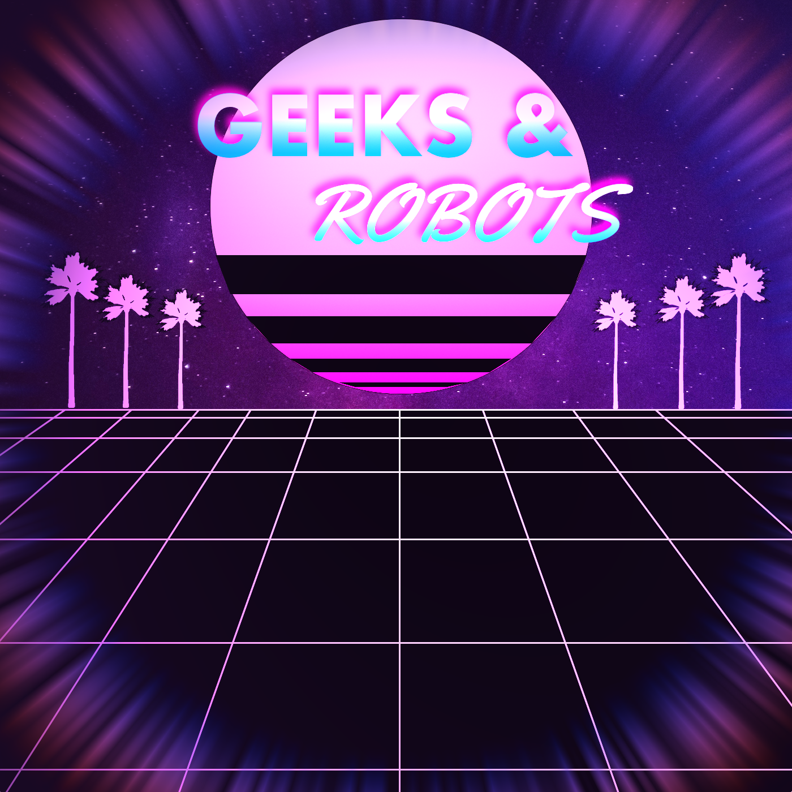

Geeks & Robots es un podcast en español divulgativo sobre ciencia y tecnología. Una píldora de 13 minutos donde se habla sobre XR, videojuegos, blockchain, etc.
Un podcast creado por Mariano de Diego
GEEKS & ROBOTS 1-1: EL METAVERSO
Proximamente...